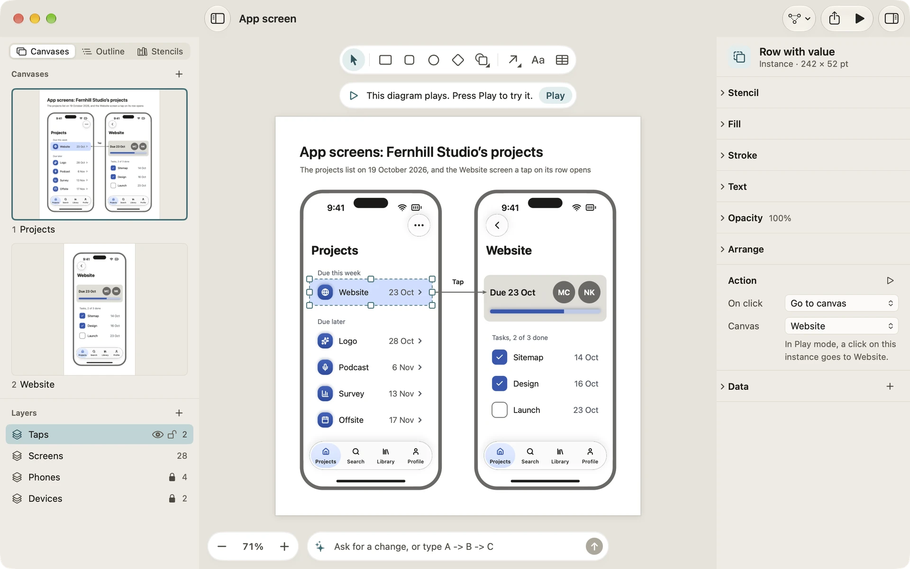
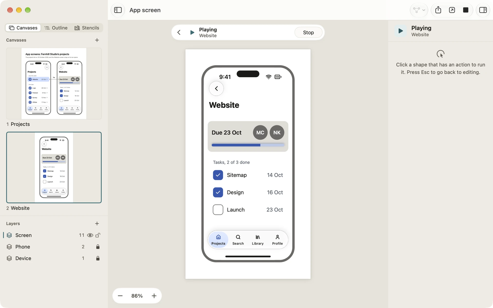
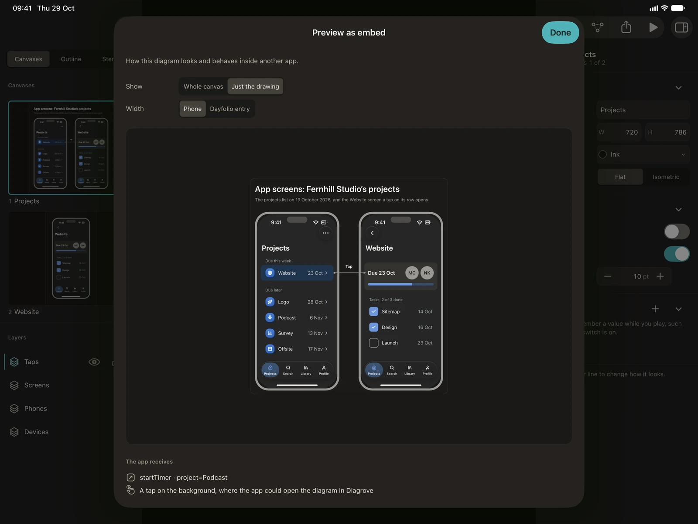

Play mode and actions
A diagram in Diagrove can do something when you click it. Give a shape a button’s job, link canvases together as screens, keep a switch on or off in a variable, then play the document like an app. This page covers actions, variables, Play mode and how a diagram behaves inside another app.
Give a graphic an action
- Select one graphic: a shape, a line, a group, a table or a picture.
- In the inspector, open the Action section. Its first row is On click on the Mac and On tap on iPad.
- Choose what it does. The rows that follow ask for what that action needs, and a caption under them says in words what will happen, such as “In Play mode, a click on this shape goes to Settings.”
A graphic has one action. When a shape with an action sits inside a group with one too, the shape’s own action wins. Once a graphic has an action, the section’s header offers Try it in Play mode.

The kinds of action
| Action | What you set | What it does in Play mode |
|---|---|---|
| Nothing | The graphic is only drawing. | |
| Go to canvas | Canvas | Shows another canvas of the same document. |
| Go back | Returns to the canvas you came from. | |
| Open link | Link | Opens the address in your browser. |
| Run shortcut | Shortcut | Runs that shortcut in the Shortcuts app. |
| Set variable | Variable, Value | Gives the variable a value: true, a number such as 3, or text. |
| Toggle variable | Variable | Switches an on-or-off variable between on and off. |
| Send to the app it’s embedded in | Name, Details | Nothing in Diagrove itself. The app showing the diagram decides (see below). |
Run shortcut is the way out to everything else on your Mac or iPad. One click in a diagram can log an entry, start a timer or send a message, through any shortcut you have.
Variables and their starting values
Variables belong to the document. They remember a value while you play, such as whether a switch is on or which step you’re on.
- Click an empty part of the canvas so nothing is selected. The canvas inspector has a Variables section. Add variable adds one and lets you name it.
- Each row shows a variable’s name and its starting value. A variable is On or off, a Number or Text: choose the kind from the row’s … button or its context menu, which also has Rename… and Remove.
- Renaming a variable renames it in every action and binding that uses it.
- In a Set variable or Toggle variable action you can pick a variable or type a new name. When an action names a variable the document doesn’t have, the caption says so and offers to add it.
Each time you play, variables start from these values. Playing never changes the document, so the next time you play, everything starts fresh. Variables are also what bindings can show: a switch that colours a light, a step counter that moves a progress bar.
Play mode
To start playing, do one of these:
- Choose View › Play (Option-Command-P).
- Click Play in the toolbar.
- Click Try it in Play mode in the Action section.
The play bar takes the tool palette’s place. It says Playing above the canvas’s name, shows Back once there’s a canvas to go back to (the Left Arrow key does the same), and ends with Stop.
While you play:
- Nothing can be selected or moved. Your diagram is safe from stray clicks.
- On the Mac the pointer becomes a hand over a graphic with an action. A click or tap on a spot that does nothing outlines, for a moment, every graphic that has an action, so you can see what to try.
- The inspector shows what to do, how to stop, and each variable’s value as it changes.
- The toolbar’s editing buttons are hidden, as are the sidebar’s + buttons and each layer’s eye and lock. Export, Send to Dayfolio, zoom, the inspector and Preview as embed keep working.
- If the document has bindings, a capsule over the canvas shows how its live data stands, with a button to refresh it.
To stop, press Esc, click Stop, or choose View › Stop playing. On iPad, tap Stop in the play bar or the toolbar, or press Esc on a hardware keyboard.
When you open a template that plays, such as App screen, a notice says “This diagram plays. Press Play to try it.”

What a host action does
A Send to the app it’s embedded in action (the field shows Send to the app) is for a diagram shown inside another app, or on a web page through the Web player. You give it a Name, such as startTimer, and Details, such as project=Larkspur. The app around the diagram decides what they mean.
In Diagrove’s own Play mode a host action does nothing to your document. Instead a note under the play bar says what the app would get, for example “An app showing this diagram would get “startTimer””, with the details listed below it as “project: Larkspur”. In the Web player, a host action goes to the page or app around the player; played on its own, the player shows a similar note.
Dayfolio doesn’t show diagrams inside its entries yet, so today a host action is mainly for the Web player and for apps you build yourself. See Diagrove and Dayfolio.
Preview as embed
View › Preview as embed shows the diagram as an app that embeds it would show it. On iPad it’s also in the toolbar’s Export menu; on the Mac you can add it to the toolbar with Customize Toolbar….
- Show chooses Whole canvas or Just the drawing.
- Width chooses Phone or In Dayfolio, the width the diagram is drawn at.
- Click or tap a graphic with an action, and The app receives lists what the app would be handed, the last three at a time. A click on the background is listed too, as the place where an app could open the diagram in Diagrove.
Choose Done, or press Esc, to close it. Nothing in the preview changes your document.
